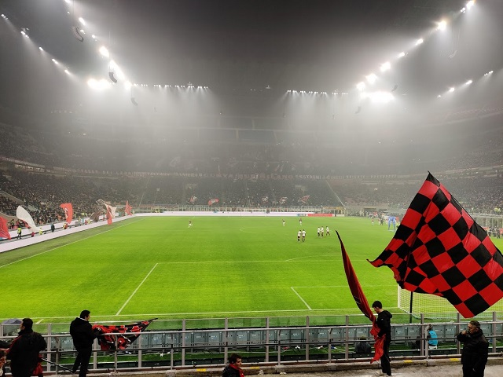
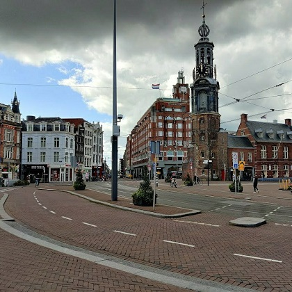
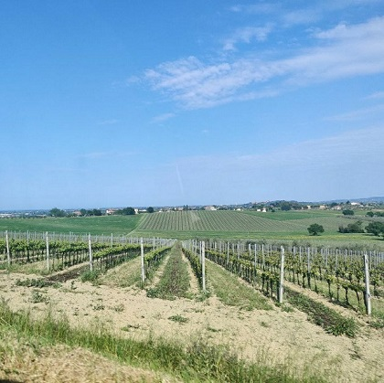
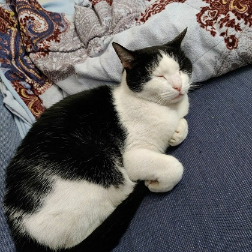

In my free time

Besides technology, I have several other hobbies that I enjoy in my spare time.
One of these is football, that I used to play regularly for few years. Nowadays, even if less frequently, I still enjoy playing with friends one every couple of weeks. I also love watching it, being a big supporter of A.C. Milan.
Moreover, I really like to travel and cook. I visited United Kingdom, Austria, Hungary, Germany and Croatia as a turist, while I lived for a year in the Netherlands before moving to Finland, where I am based at the moment. In these countries I picked up some recipes and cooking advice that improved my kitchen skills, but I also taught few Italian recipes to the great people I met in these places!
Other activities I enjoy sometimes include archery and fishing, and whenever I go back to my hometown I enjoy spending time with my family's cats.


